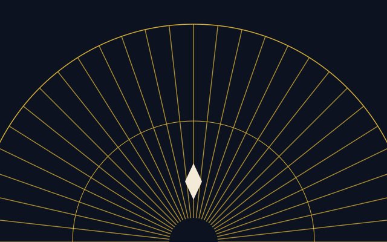
Sunburst
Rays fan from the top of every page and from the top of the marquee. They are gradients and one inline drawing, nothing downloaded.
A retemplate template
Brass on black. Cream by day, navy by night. Sunbursts, stepped corners and chevron rules, with Limelight over the door and Jost for the small print.
What you take
Everything below is built from the same markup every retemplate template uses. Swap css/ and assets/ and the page changes its clothes; keep them and you have this.
The stepped card is Detailed's own: the top corners cut in two steps with a gold hairline following the cut. The plain card is still here, with an icon, for when a page needs to be quiet.

Rays fan from the top of every page and from the top of the marquee. They are gradients and one inline drawing, nothing downloaded.
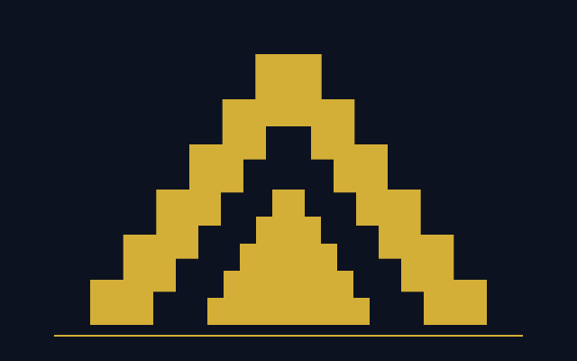
One clip-path polygon, kept in a token, cuts the steps on cards, frames and pictures alike.
The palette block in theme.css pastes into a retoken site as it is. See the tokens.
Horizontal cards put the picture on the left or, with card-media-end, on the right. The feature card mounts its picture in a stepped gold frame and, when you rest on it, a sheet of gold leaf sweeps across once.
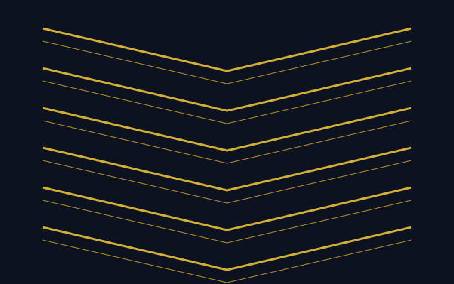
The picture takes a little over a third; the words take the rest.
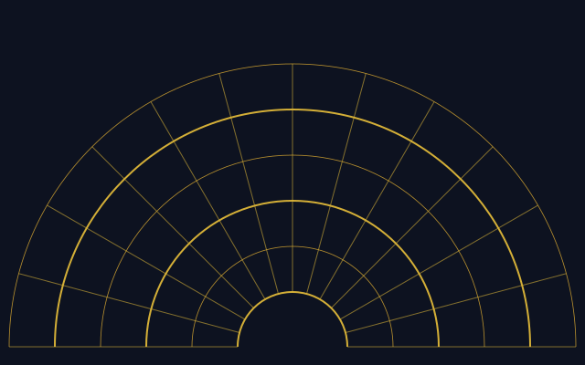
The same card mirrored. One class differs.
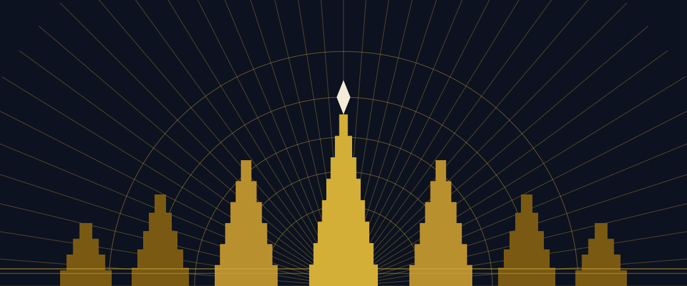
A double gold rule around the card, the picture in a stepped frame, and the sheen. It runs once per hover, in CSS, and not at all for people who ask for reduced motion.
Eight pieces of the ornament set. Click any of them and the lightbox opens on the band, where brass belongs; the arrows are links and Esc closes it.
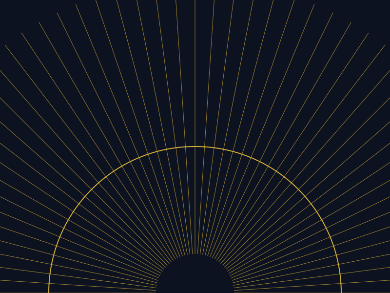
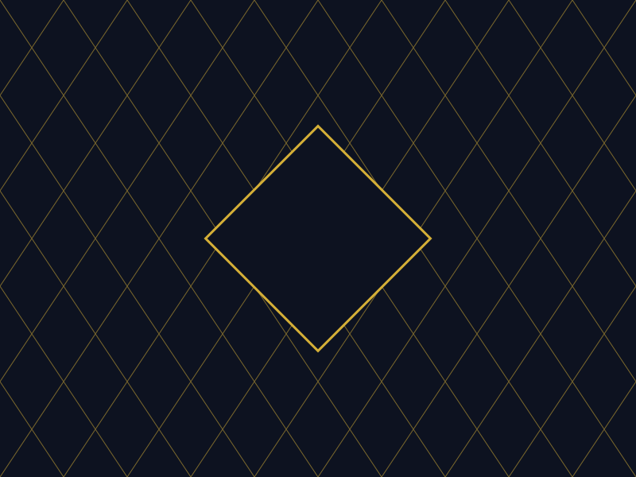
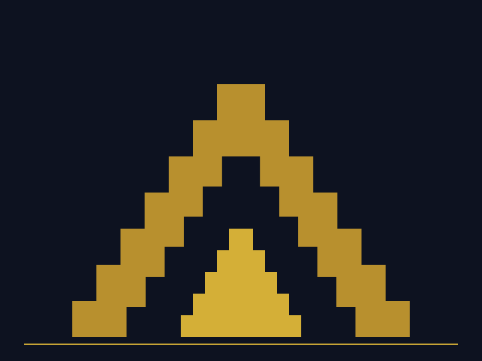
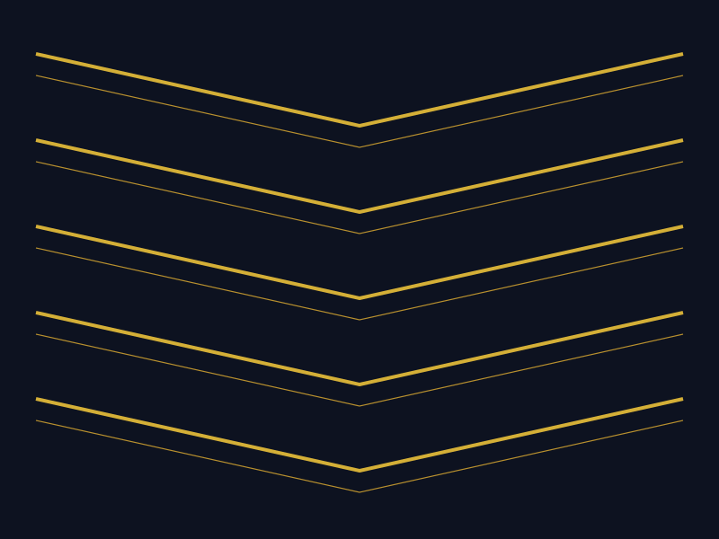
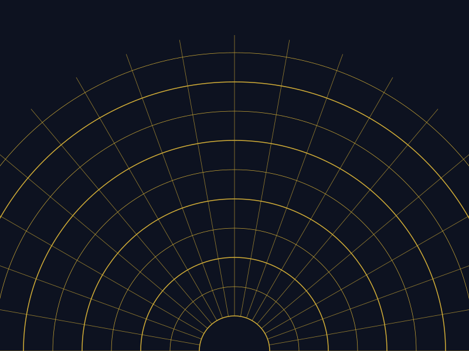
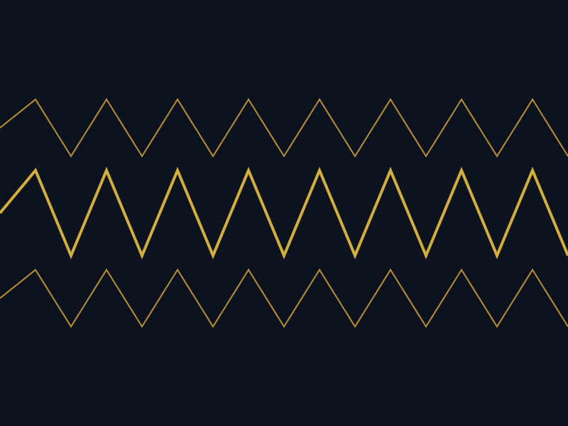
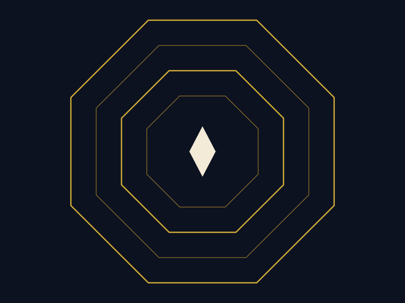
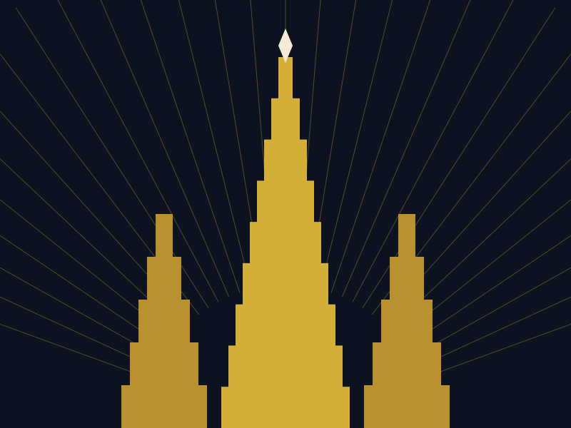

Fifty-fifty
A heading in Limelight, a paragraph and one call. The picture is framed by a double gold rule on the inside of the box; fifty-fifty-reverse moves it to the right, as here. On a phone the picture comes first either way.
The data table has a second dress. Add detailed-menu to the wrapper and it sets like a menu: courses between hairlines, dotted leaders, the last column right in tracked capitals. The plain table, with its gold-ruled head, is on the table page.
No. Copy the folder, link the two stylesheets, the one script and the fonts, and write HTML.
Google Fonts, by one <link>: Limelight, Josefin Sans and Jost. Without the network the page falls back to Copperplate or Futura, and the README says how to self-host.
The rays, the chevrons and the steps are CSS gradients, one mask and one clip-path, all held in --detailed-* tokens. The sunburst in the marquee is one inline drawing inside a detailed-flare wrapper. Strip the wrappers and the page is still whole.
A single accordion stands on its own.
css/, js/theme.js, assets/ and the README. Everything else on this page is showcase and can go.
Buttons are tracked Josefin capitals with a double inset rule on the primary. The gold outline is Detailed's own, for the marquee and the band. A switch is a checkbox with role="switch"; badges and banners carry status.
Dialogs are native. The button opens one; the dialog closes itself through a form, and the page behind it dims to the band.
Most pages are prose, so .prose styles every construct a markdown renderer produces: headings with gold double rules, lists, quotes, code, tables, footnotes. The blog post runs the full test document through it; defaults shows every bare element.
Ornament is not the opposite of discipline. It is what discipline looks like when it has time.